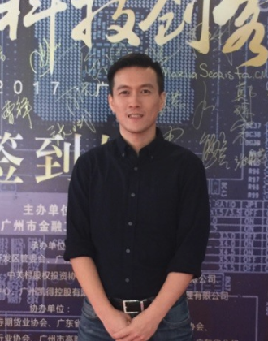
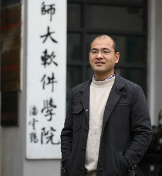
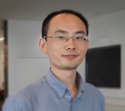

时间：2017年10月21日下午 16：30 - 17：50
地址：浙江大学玉泉校区永谦主会场
“企业级区块链技术剖析与应用实际” -- 黄海旻 镍磐科技CEO
黄海旻，加拿大Simon Fraser大学计算机科学硕士，曾任职微软总部，后在阿里云担任工程总监，24券CTO，宜人贷CTO，原麻袋理财总经理。镍磐科技针对面向企业和产业联盟的区块链技术需求，提供企业级高可用联盟链和行业解决方案。
“数据库角度看区块链” -- 金澈清 华东师范大学 教授
金澈清，于1999和2002年在浙江大学分别获学士和硕士学位，2005年在复旦大学获得计算机软件与理论专业博士学位。2005年7月至2008年9月间曾工作于华东理工大学，并曾于2003年12月至2004年5月和2007年12月至2008年2月分别在香港大学和香港中文大学短期访学。2012年被聘为教授、博士生导师。在2003 年12 月至2004 年5 月期间，曾于香港大学电子商务研究所担任研究助理职务，研究ETL 技术；在2007年12 月至2008 年2 月期间，曾于香港中文大学系统工程与工程管理系做访问学者，研究不确定数据管理技术。主要研究兴趣包括数据流管理、不确定数据管理、基于位置的服务、数据质量等，已经发表40多篇学术论文，包括VLDB、ICDE、CIKM、VLDB J.、Information Sciences和KAIS等国际会议和期刊上。2009年，指导学生获得APWEB/WAIM 2009 国际会议的最佳学生论文奖；2011年，获得WAIM 2011国际会议的最佳论文提名奖。
“超级账本项目” -- 杨保华 Oracle 架构师
Baohua Yang is currently the principal architect of Oracle Blockchain, leading the development of Blockchain service and product. His interests include key areas in Fintech, Distributed System and Analytics, especially on emerging technologies such as Blockchain, BigData, Cloud and Machine Learning. As an architect, he has been linked into the system architecture, design, and algorithm areas for over 10 years, with leading the design and implementation of enterprise solutions and solving key technical challenges. As an Open-Source developer, he has contributed to numbers of projects (e.g., Hyperledger, OpenStack and OpenDaylight), and has lead several projects including easyOVS, Hyperledger Fabric-SDK-py and Hyperledger Cello. He is currently serving in Hyperledger project as a member of the Technical Steering Committee (TSC) and co-chair of the Technical Working Group in China (TWGC). He has published 10s of articles in top-quality international conference and journals (e.g., IEEE INFOCOM, IEEE Trans on Computers), with several technical books and patents. He is also TPC member of numbers of academic conferences and journals.